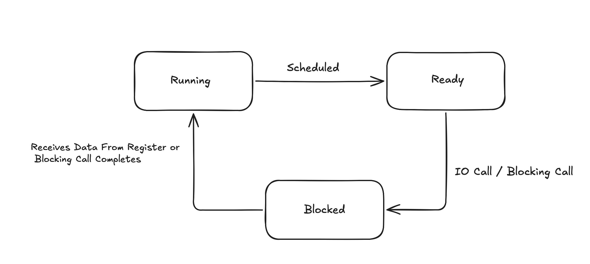
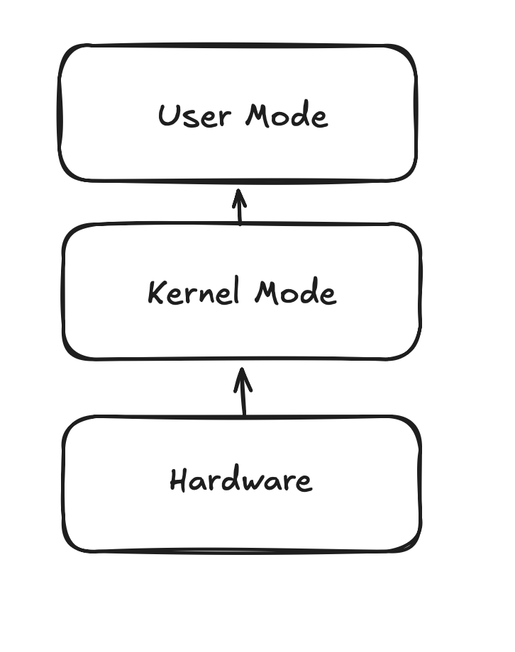
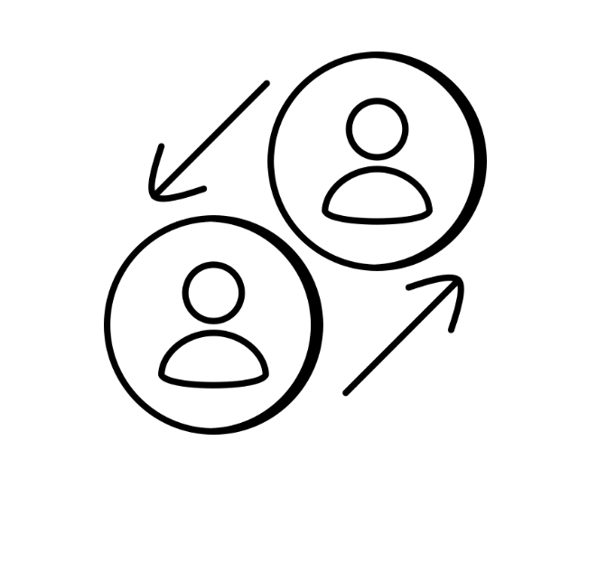
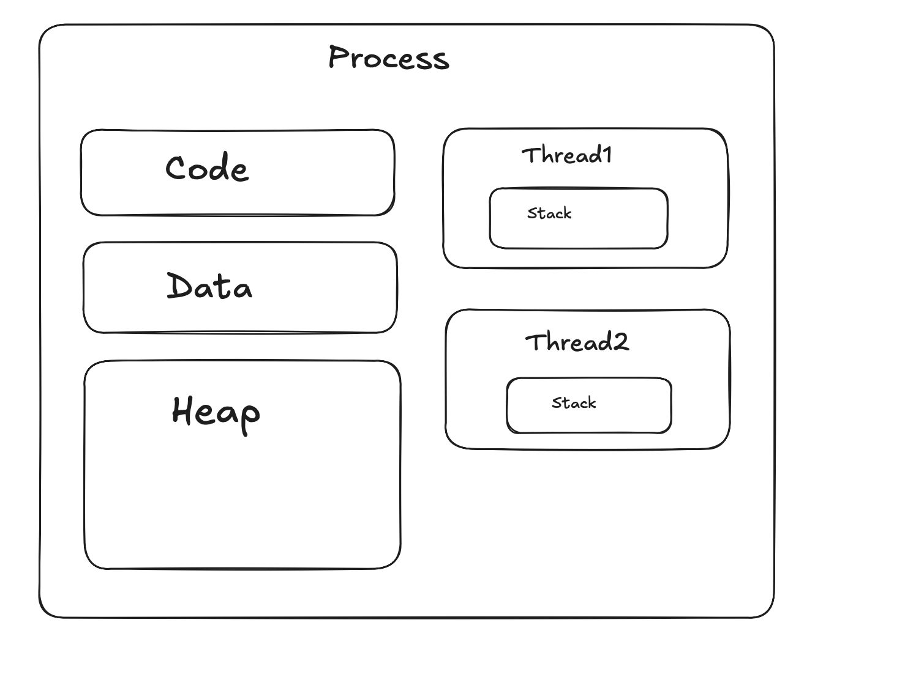

Imagine trying to solve a massive puzzle with thousands of pieces scattered across a table. Some pieces clearly fit together immediately, some need to wait until the surrounding structure is built, and some get pushed aside because they are not useful at that moment.
A computer works in a surprisingly similar way.
Programs constantly generate tasks: opening files, loading webpages, playing music, running calculations, waiting for user input, and communicating with hardware. The operating system must organize all these tasks efficiently inside memory and decide which task gets CPU time at any given moment.
At first, this sounds simple. Just run everything one after another, right?. But in reality, not all tasks can run immediately. Some tasks need data from disk, some wait for network responses, some are more important than others, and some simply cannot fit into execution at the same time.
This is where the CPU Scheduler comes in.
The CPU scheduler is one of the most important parts of an operating system. Its job is to decide which process runs next, how long it runs, when it should pause, and when another process should take over. Without scheduling, modern multitasking systems would feel slow, unresponsive, and chaotic.
Understanding Processes
Before diving into how the scheduler works, it helps to understand what it is actually scheduling.
A process is simply a program in execution.
- Your browser is a process
- Spotify is a process
- A game is a process
Each one needs memory, CPU time, access to files and devices, and various system resources to function.
The CPU itself is limited, though. Even with multiple cores, there are usually far more active processes than CPUs available to run them simultaneously. Because of this, processes constantly move between different states.
Ready
The process is prepared to execute and is waiting for CPU time.
Running
The process is currently executing instructions on the CPU.
Waiting / Blocked
The process cannot continue until some event occurs. For example, consider a call like:
read(fd, buffer, size);
If the requested data is not immediately available, the process pauses and waits. Rather than wasting CPU time sitting idle, the scheduler gives that time to another process.
Terminated
The process has finished execution.

Kernel Trapping and System Calls
With an understanding of how processes behave, it is worth looking at how they interact with the operating system itself.
User programs cannot directly access hardware or sensitive system resources. Instead, they request services from the operating system using system calls. When a process makes one of these calls, the CPU switches from user mode to kernel mode. This is called a kernel trap. Common examples include:
- Reading a file
- Allocating memory
- Creating a process
- Sending network data
The kernel takes control, performs the requested operation, and then returns execution back to the process.

Context Switching
Allowing the kernel to swap between processes introduces its own challenge: how does the system pick up exactly where it left off?
Imagine multiple people sharing a desk to solve puzzles. Every time one person leaves and another takes over, everything on the desk must be saved and then restored. A context switch works the same way.
- Save the current process state
- Store CPU registers
- Load the next process state
- Resume execution
This creates the illusion of parallel execution. However, switching too frequently introduces overhead, so the scheduler must be thoughtful about when and how often it happens.

Round Robin Scheduling
One of the most straightforward scheduling strategies is Round Robin, which is designed to keep things fair. Each process gets a fixed slice of time called a time quantum. If the process is still running when the quantum expires, it is preempted and moved to the back of the queue.
Advantages
- Fair
- Responsive
Disadvantages
- Too many context switches if the quantum is too small
Shortest Job First (SJF)
Round Robin treats all processes equally, but sometimes it makes sense to prioritize efficiency over fairness. Shortest Job First takes a different approach, having the scheduler pick the process with the smallest estimated execution time.
Advantages
- Low average waiting time
Disadvantages
- Starvation of long jobs
- Hard to estimate execution time accurately
Priority Scheduling
Starvation aside, some situations require more than just efficiency. They require urgency. Some processes are simply more important than others:
- Audio playback
- Real-time communication
- System services
Priority scheduling lets high-priority processes jump the queue. Low-priority tasks can still suffer from starvation, but this is typically handled through a technique called aging, which gradually raises the priority of processes that have been waiting a long time.

Processes vs Threads
So far, the focus has been on scheduling between processes. But within a single process, there is another layer of concurrency worth understanding.
A thread is the smallest unit of execution inside a process. A video streaming app, for instance, might use separate threads for rendering, input handling, networking, and video decoding.
Shared by threads:
- Code
- Heap
- Global variables
- Files
Not shared:
- Stack
- Registers
- Program counter
Race Conditions
Sharing resources between threads is powerful, but it comes with a significant risk. A race condition occurs when multiple threads modify shared data without coordinating with each other.
Balance = 100 ATM A withdraws 80 ATM B withdraws 50
If both read the balance at the same time before either has written its result, the final balance could end up wrong. The system never catches the overdraft because each ATM was working from stale information.
Mutex
The solution to race conditions is to enforce exclusive access. A mutex allows only one thread to access a shared resource at a time.
lock(mutex); counter++; unlock(mutex);
Any other thread that wants access must wait until the mutex is released before proceeding.
Semaphore
A mutex is all-or-nothing, but sometimes a resource can support more than one concurrent user. A semaphore generalizes the idea by allowing a fixed number of threads to access a resource simultaneously.
A useful analogy is a parking lot with a limited number of spaces. When a space is taken, the count drops. When a car leaves, the count rises. A thread that arrives when the count is zero simply waits until a spot opens up.
Scheduling and Synchronization Working Together
These two ideas are not separate concerns. They are deeply connected. When a thread blocks, whether because it is waiting on I/O, trying to acquire a mutex, or waiting on a semaphore, it is moved to the waiting state. The scheduler immediately gives the CPU to another thread that is ready to run. When the blocking condition is resolved, the thread returns to the ready queue and waits for its next turn.
The scheduler and the synchronization primitives work in tandem to keep the system moving efficiently without letting any thread monopolize the CPU or corrupt shared state.
Final Thoughts
CPU scheduling and multithreading are not separate systems bolted together. They are complementary mechanisms that reinforce each other. Scheduling decides who gets to run and when. Synchronization ensures that when multiple things run at once, they do so safely.
Together, they power everything from browsers and games to the large-scale servers that handle millions of requests every second, coordinating countless context switches all the while without the user ever noticing. In my next blog I would cover Paging and Memory Allocation by the OS. Thanks a lot for reading so far!